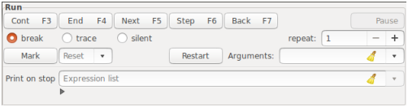
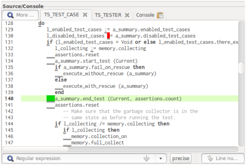
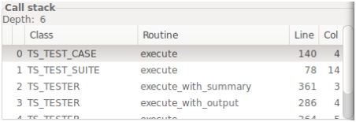
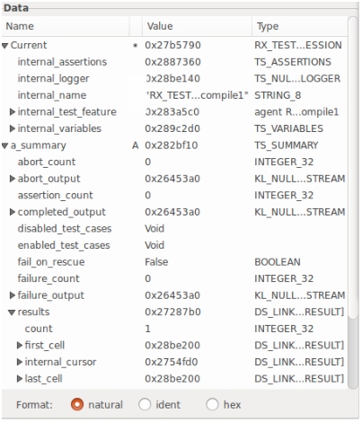
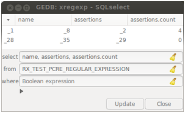

| Figure 1: Overview of the main window (here, overlaid by artificial background colors). The Eiffel system shown in the screenshots has root class XREGEXP from cluster test/regexp/TESTGEN of the GOBO distribution. |
A debugger for the GOBO Eiffel compiler |
This manual describes a graphical debugger for the Gec compiler. The debugger has two levels of functionality. First, a reduced version of the debugger (called the post mortem analyser) is added to a system if it is compiled not in finalized mode and without the proper debugger (which will be called runtime analyser in the following while debugger means both, post mortem analyser and runtime analyser). The effect is that the post mortem analyser gets invoked if the program crashes for some reason. This way, the call stack as well as data on stack and heap can be analysed. The post mortem analyser provides functionality for the following topics:
Additionally, the runtime analyser provides functionality for
In contrast to debuggers like gdb that run debugger and debuggee in two different processes, the Gedb follows a poor man’s approach: at many instructions of the generated C code calls to the debugger are inserted during compilation to check whether the debugger should become active, in particular checking for breakpoints. The more intelligent approach of dbx, gdb and the like which run the debuggee between breakpoints at full speed is not possible. This approach required, among others, that information about the generated machine code (precisely, the correspondence of machine addresses and program lines) is provided by the compiler to be known to the debugger. But this is not the case here, since the Gec compiles to C code, not to machine code. The chosen technique increases dramatically the run time between breakpoints, the relation 1:1200 or worse is often observed (but does not detectable slow down the debuggee when progressing the system step by step since then most time is consumed by user interactions). The post mortem analyser does not slow down the computation so much: at the places in C code where the runtime analyser would be called it simply sets a local variable to the program position. Together, with the meta-information linked into the debuggee this is sufficient for the Gedb to do its job after crash. The chosen approach also determines the master/slave relation of debugger and debuggee. In case of the post mortem analyser the debuggee contains the main routine and is the master while the debuggee is merely a library to be linked to and that is called at the dramatic end of the debuggee’s run. By contrast, the runtime analyser is the master that drives the debuggee by user interactions, here, the debuggee is a library (a .dll in case of Windows, a .so in case of Posix compliant systems) to be linked to the debugger on request.
To integrate the debugger into the Gec compiler the compiler had to be modified. But this concerns the code generation and command line analysis only, so the compiler’s integrity is preserved. The debuggee’s integrity is preseved as well since only additions to the C code are made that do not modify the behaviour of the normally generated code (surely, the additions cause the longer runtime).
The debugger uses the GTK+ graphics library for the graphical user interface (GUI for short). GTK+ and related libraries as GLib etc. are written in C and are intended to be used from C programs. This is a hard job for an Eiffel programmer. But there is the OO programming language Vala that is a shell for GLib and GTK+, so the debugger has been written in Vala.
So far it has been described what the debugger is and what it does. Another question is what the debugger does not. On the lower end, some traditional debuggers like the gdb allow for low level debugging on the level of assembler code. This is not possible here since the Gec compiles to C code, not to assembler code, and the necessary meta-information is not available. In the middle, the debugger does not support debugging of multi-threaded Eiffel systems: each thread has its own stack and it is not yet possible from the debugger’s side to distinguish between the stacks. On the upper end, the Gedb is not an IDE, i.e. it does not include an editor, nor the Gec, nor any kind of project management.
The debugger should help, as the name indicates, to find bugs
in an Eiffel system, but itself must be bug free.
This is the ideal, not the reality.
One deficiency is already known and cannot be solved in the given framework:
the debugging session may fail if the debuggee uses
(via external routines) the GTK+ graphics library
as does the debugger. The calls of both programs to this library
may interfere in an uncontrolled way causing a crash.
Several other debugger errors are caught by exception handling:
execution of the actual command is cancelled and an error message is issued.
It may happen that even this emergency break does not work and
the debugger crashes during command execution.
In such a case, please send a bug report to
The debugger is part of our Gec distribution. It is shipped as the C code generated by the Vala compiler, the debugger will be generated during the installation of Gec. The debugger’s C code relies on the graphical library GTK+ and the prerequisites of that, so the essential prerequisites are
It should be emphasized that the Vala compiler is not needed but installing it will also install the prerequisites listed. On the other hand, the original Vala source code is included in the distribution, too. If the debugger is to be installed from the sources then the following prerequisites are needed additionally:
Finally, the extended Gec and the debugger sources
can be downloaded from branch extra of the git repository at
https://github.com/wjansen
(branch master provides the original Gec compiler).
Installation consists of two steps. First, installing the extended Gec compiler (this is done the usual way), thereby the debugger is installed, too. The result is, besides the common programs gec etc., the library libgedb.so (or gedb.dlls on Windows) that contains the bulk of debugger code and the executable gedb (or gedb.exe). Both debugger parts are put into directory $GOBO/bin. When the debugger acts as runtime analyser then gedb is the main program that links libgedb.so as well as the debuggee library, but when the debugger acts as post mortem analyser then the debuggee is the main program linking libgedb.so while gedb is ignored.
Second, to prepare an Eiffel system for debugging operation system specific options are to be provided in files $GOBO/tool/gec/config/c/*.cfg. For example, in case of Linux using gcc the following lines have to be added. To section Command lines (for creating a loadable library instead of an executable):
linklib: gcc $lflags $libflags -o $exe $objs $libs $gc_libs -lm
to section File extensions (library extension and Posix specific prefix):
lib: .so prelib: lib
to section Variables (additional flags to create the library):
#ifdef EIF_DEBUGGER cflags: -fPIC libflags: -shared #else libflags: #endif
These settings have to be adapted for the other configuration files if they are to be used.
HintIf the debugger is to be installed form the Vala source code switch to directory $GOBO/library/tools/debugger/gui and run make before installing Gec.
The use of the debugger is controlled by Gec command line options and/or options in the .xace file (corresponding settings in an .ace file are ignored). The system is not prepared for debugging (and a traditional system is generated) if it is compiled in finalized mode (option --finalize on the command line or <option name="finalize" value="true"/> in the.xace file). If not in finalized mode then the presence or absence of command line option --gedb=choice controls which debugger variant will be added to the system:
(so, no option or the parameterless option will be sufficient in most cases). It is also possible to generate a debugged system by use of geant: add option -Ddebug to the command line. This option is originally used to prevent finalizing, now it has the second effect of adding the post mortem analyser. The result of the compilation is an executable program if the post mortem analyser is added but it is a loadable library if the runtime analyser is added (precisely, the runtime analyser is the executable program that loads the library).
The generation of debugging code may be switched off or on for particular classes or for the classes in chosen clusters. To this end, options like the following have to be added to the .xace file:
<cluster name="some_cluster"> <option name="debugger" value="false"/> ... <class name="SOME_CLASS"> <option name="debugger" value="true"/> ... </class> ... </cluster>
For each class the class specific option (if set) or that of the narrowest enclosing cluster (if any) is applied, settings in wider clusters have no effect on the class, and if no option has been set at all then the default value true applies. If debugging code is not generated for a class then meta-information about its variable attributes and local variables of its routines (including routine arguments and object test variables) is generated as usually, i.e. the may be examined. But the class is treated in the manner of the post mortem analyser: breakpoints cannot be set and the system does not stop within routines of the class (but it can be stopped in routines called from the class). This will improve the runtime behaviour of the system, in particular, if well tested library classes are excluded from debugging. For convenience, if the system is compiled by means of geant where classes from kernel libraries are provided in the .xace file by tags
<mount location="$GOBO/library/library.xace"/> <mount location="$GOBO/library/free_elks/library.xace"/>
then these classes are automatically excluded from debugging. If debugging code for some classes or subclusters should be generated anyway then the appropriate options have to be set in the geant generated file ge.xace.
To start a session of the runtime analyser the debugger is started from command line by command gedb or from a desktop element (such an element is not automatically created). The command line may include the library name of the debuggee followed by any command line arguments for it. If no library is specified (in particular when running the debugger from a desktop element) then the library is to be loaded by menu item File → Load. After loading control switches to the debugger immediately after debuggee’s start and the debugger GUI is shown waiting for user interactions. Debugger work (and running the debuggee) is terminated by menu item File → Quit or simply by pressing Control-q when the debugger’s main window has the keyboard focus.
In case of the post mortem analyser things are much simpler. The debuggee (now an executable) is started as usually. The debugger is invoked when the debuggee crashes (hopefully never). If so then work continues as in case of the runtime analyser.
Figure 1: Overview of the main window (here, overlaid by artificial background colors). The Eiffel system shown in the screenshots has root class XREGEXP from cluster test/regexp/TESTGEN of the GOBO distribution.
The window contains a menubar on top, a statusbar on bottom and between them the parts named Run, Breakpoints, Source/Console on left half, Call stack, Data, and Evaluation on the right half. There are two more parts: the Source/Console part is actually two parts, Source shown in Fig. 1 and Console not shown, and the SQL select part to be shown separately. More windows can be opened from menu or by specific actions: a poor Source part called Feature window and several additional data windows.
The manual will describe the parts in the in the order from left to right and within each half from top to bottom.
Parts Breakpoints, Source, and SQL select contain fields to enter a class or type name. This is done via special text entries: a regular expression for the class or type name is to be entered, a combobox opens showing the matching classes or types, one can select from the combobox when this becomes convenient. While class names never include generic parameters a type name may contain actual generic parameters, in this case the opening bracket has to be escaped during input by a backslash since the bracket is a special symbol of regular expressions.
Parts Run, Breakpoints, SQL select, and Evaluation, and the Alias definition window contain special fields for entering expressions. The format of valid expressions is described in Sec. 4, there is also described how the expressions are validated. To most of such fields a restricted history is accompanied storing previously entered expressions. These can be shown and selected from by clicking the button on the field’s right end.
If a part contains a field for entering expressions it contains also a so-called Expander widget close to this field (several of those fields in the same part share the Expander), here consisting of two text lines. The first line is generally up to a leading expand/compess icon empty while the second line is hidden (clicking the icon shows and hides the second line). If a validation error occurs then the first line contains an error description and the second (now made visible) contains the expression in question showing in red the part where the error has been detected. In other words, this is the debugger’s way to issue error massages, the heavy way of opening a dialogue window is avoided.
The menu bar contains the entries File, Window, Preferences, and Help. Menu File has the following items:
Menu Window has the following items to open a new window:
Menu Preferences has the following item:
Menu Help has the following items:
The Run part is available only if the debugger is used as runtime analyser (otherwise, the part is hidden). The elements of the part control the stop-and-go behaviour of the debuggee.

Figure 2: The Run part.
When the debugger gets invoked then the expression list (if any) in text field Print on stop will be evaluated and its values will printed on the Console part (see Sec. 3.6). The expressions are evaluated in the routine of the topmost call stack level. If the routine changed after a stop then the expression list disappears (names of local variables in the expressions are now invalid, maybe also query names) and reappears as soon as the routine is entered again with the same target type.
Control switches forth and back between debugger and debuggee. More precisely, the debugger regains control for any of the following reasons:
When the debugger got the control the debuggee may be continued
by means of the buttons on the top of the part.
In particular they have the following effect
(where n is the value of repeat):
| Button | Key | Meaning |
| Cont | F3 | continue to n-th occurrence of a breakpoint |
| End | F4 | continue to the end of the n-th nested compound |
| instruction, in particular leave loop clauses | ||
| Next | F5 | continue to the n-th instruction |
| without stepping into called routines | ||
| Step | F6 | do n steps, step also into called routines |
| Back | F7 | continue to the selected stack level |
| Stop | Pause | interrupt the debuggee |
If some classes have been compiled without debugger information (see Sec. 2.3) then the continuation commands stop at the first possible position for which debugger information is available, in particular, the Step command stops at the first nested routine call for which debugging information has been generated (if any) or simply jumps over routine calls of the class. Nonetheless, even if debugger information is not generated the actual program positions are monitored, so the contents of the Call stack part is correct.
The counter n is determined by the spin button repeat. Moreover the effect of Cont is modified by the radio buttons
The effect of button Stop 1 is complementary to that of the other buttons. Quite naturally, also its sensitivity is complementary: if the debuggee has stopped for some reason then Stop is insensitive while the other “dynamic” buttons are sensitive, but if the debuggee is running then Stop is sensitive while the dynamic buttons (and most GUI elements) are insensitive.
Some remarks seem to be in order to explain when the Next and Step commands actually stop. Command Next stops before the next instruction. In particular, it stops at the keywords and special symbols do, once, from, until (each iteration), across, if, inspect, create (if an instruction), retry, :=, and ?=, as well as before a procedure call (qualified or not).
HintThese program points are those where a breakpoint can be set.
The stop of command Step is more involved. If stopped at an instruction (e.g. as the result of a Next command) then the program continues to the next routine call or instruction; but if it stopped at (not before!) a routine call then the program steps into the routine and stops there at the do or once keyword (or at the end keyword in case of an already initialised once routine) what is considered stopping at an instruction. The two stages of the Step command have been introduced to be able to stop before nested function calls, and to make those stops visible. For example, consider the procedure call some_proc (some_func (arg)) (where for simplicity arg is not a function call) and suppose that a Next command stopped before the call:
some_proc (some_func (arg))
(the stop point is indicated in the displayed source code by green background, here by a boxed character). A following Step command continues to the call of some_func but does not yet enter the function (that’s for visibility):
some_proc (some_func (arg))
The next Step command jumps into the function, and after return (e.g. by command Back) the program is ready to enter the procedure by one more Step command (again for visibility not yet in the procedure):
some_proc (some_func (arg))
A similar role as the call instructions play for stepping into their argument expressions do the keywords create, if, inspect, until play for the expressions following them.
If the program stopped at a point where a breakpoint can be set (underlined in the Source part) then the program state (variables on heap and stack, once function values, and program point) may be stored to a file for later restoring during the same debugger session. The stored system state remains valid as long as the current routine is not left to its caller, otherwise, the stored state is silently discarded. Storing and restoring the system state may be used to approximate a critical program point more and more closely.
Clicking button Mark stores the program state and marks the program point to be recoverable. The program point is added to the combobox to its right. A program point in this combobox is recovered when selected. Then also marked program points not in the call stack up to the selected program point are discarded but marked points at the same call stack level remain valid. So, it is possible to jump forward and backward in the same routine call.
Warnings
- Non-Eiffel data, e.g. file contents, are not stored and restored. This may cause the program state to be incorrect after Reset.
- Store and restore make a deep traversal through the objects reachable from the current routine, so these actions may take some time.
- The program state is written to a binary file debuggee.mn in a temporary directory (n is a counter). This file should not be viewed or printed and must not be modified (it is deleted at end of the debugging session).
- Debugger settings such as breakpoint definitions are not stored and restored. So, any breakpoint definitions are preserved across the Reset command.
A special variant of restoring a previous program state is given by button Restart. The program start is marked automatically (but not shown in the Reset list) and restored, as the button name indicates, by clicking Restart. This form of restoring does even a bit more: the string in text field Arguments becomes the new command line arguments. After editing this field its contents does not present the actual arguments as long as the Restart button has not been clicked.
HintPressing the right mouse button in this text field pops up a menu showing how the string is parsed into separate arguments. The menu is for visualization only, clicking an item has no effect.
RestrictionArgument parsing works very well under Posix compliant operating systems, otherwise it is rather poor.
The Breakpoints part is available only if the debugger is used as runtime analyser (otherwise, the part is hidden). The part consists of a table showing all defined breakpoints and a row of buttons.
Figure 3: The Breakpoints part.
The columns of the table have the following meaning, most of them denote restricting conditions: the breakpoint becomes active when all specified conditions are satisfied (an empty field means True).
The Type condition may be used to make the expressions in the If and Print columns valid (the Current object is the starting point for evaluation). More complex is the interaction of the Catch and At conditions. If both are specified then they work together in the following manner: the condition is satisfied if the rescue clause of the routine enclosing the At location will catch the exception. In any case (At specified or not), the program point shown in the Source and Call stack parts is the point where the exception occurs, not that of a rescue clause catching the exception, in particular, not the At location.
Breakpoints may (and should!) be edited. To this end, clicking the right mouse button on a field in the table starts an editing cycle for this field. According to the column type the “editor” is as follows.
The editors have been chosen such that most input errors can be avoided. Unfortunately, in case of At and Watch conditions one has to work in two parts of the graphics, first in the Source or Data part to select the interesting location or variable and then in the Breakpoints part to apply it.
HintFor convenience, there is also the possibility to set and remove breakpoints directly in the Source part, see Sec. 3.5.5.
A new breakpoint without any conditions is created by clicking button New. One or more breakpoints may be selected by singly left clicking (or selected and deselected when also the Control key is pressed). The set of selected breakpoints will be enabled, disabled, or deleted when clicking the corresponding buttons. Finally, the Debug clauses check button controls whether debug clauses in the Eiffel code are to be treated like breakpoints.
The Source part consists of the main text field that is the overlay of several source texts (and the Console part, see Sec. 3.6) and of the bottom fields to enter a search string or a line number.

Figure 4: The Source part showing a breakpoint (red) and the actual stop point (green). The underlined characters represent possible positions for breakpoints.
Within the displayed source code a few small parts may be highlighted (besides syntax highlighting) as follows:
The various background colors take the priorities: orange, red, green, light pink, light blue, medium blue, light green, light gray.
The class is selected (and added to the tag fields bar if not yet there) by
If a class is selected that has been excluded from debugging then this fact will be indicated by striking through the class name in the tag fields bar.
Within the text field a special location is indicated by the insertion cursor (not to be confused with the mouse pointer): a small bar that sits between two characters of a line (or at the very begin or end of a line). It can be moved by
A specific line can be selected by entering a number into the entry on bottom right of the Source part. Entering of the number may be initiated by clicking in the entry to make it sensitive for keyboard input, or by Control-l in the text field (in this case the text field remains sensitive); entering is finished by pressing the Enter key. The entered number n may be
The text field is not writeable but searchable: two methods are provided. First, enter the string (generally: regular expression) to be searched into the search field at the part’s bottom, close input by pressing Enter. Repeatedly search of the same pattern continues the search starting after the previously found pattern.
Second, fast processing incremental search can be performed from within the text field. Entering Control-f starts a search cycle, then forthcoming entered printable keys are accumulated to a string that is searched immediately. The sequence of key presses may include BackSpace to remove the last key from the search string (and search goes back to the previously found pattern), or it may include Arrow Up, Arrow Down to search the same string again in the given direction. All other keys and moving the mouse pointer outside the text field terminate the search cycle. After termination the same string may be searched by initiating another search cycle with two Control-f presses. In any case, the search is case insensitive and regular expressions are not supported.
The actions of the Source part described so far work completely inside the GUI without interacting the debuggee and these actions are available even when the debuggee is running. By contrast, if not the contrary is not stated explicitly, the following actions are available only if the debuggee is not running.
The various Control characters may be read as “show actual”, “breakpoint”, “delete breakpoint”, “go to”, “go to in any case!”, “text of”, “evaluate”, and “evaluate now!”, respectively.
Some final remarks on the phrases “routine in the call stack” and “next to the insertion cursor”. A routine belongs to the call stack if it is the routine of the selected level in the Call stack part (see Sec. 3.7) or the routine of a higher level (for implementation reasons, routines on lower levels are not accessible). If the routine occurs several times then action Control-. and background coloring for the actual point select the one closest to the selected level.
The location for the breakpoint is the first underlined text position left or above the insertion cursor, it is at the same time a position where a Next command stops.
The Console part is available only if the debugger is used as runtime analyser (otherwise, it stays hidden).
The Console part is a text field of (nearly) black background containing the debuggee’s output by io.output (white), io.error (light pink), and the user input read by io.input (light blue). Additionally, the continuation commands (i.e. Cont etc., Mark, Reset) and stop reasons are recorded there (the last includes also the output of Print fields of the Run part or of a matching breakpoint). The colors follow the traffic light metaphor: green for activating the debuggee by Cont etc., red for the stop reason, and, possibly, yellow for recording Mark and Reset commands.
The Console part is integrated into the Source part for practical reasons only. The default size of the Source part is chosen such that as many source code can be shown as is visible in a terminal window. The console window has naturally the same size and to save space of the debugger outlay, the Console part has been made an alternative “source”. Its tag name is Console and it is always located at the right end of the tag fields bar. The different roles of source code and console are distinguishable by their complementary backgrounds: white versus black. Nevertheless, if there is enough space on screen then the Console part may be become a separate window: click on the icon of its tag. Pressing the Close button of that window puts the Console part back into the Source part.
If the Console part is not displayed in a separate window then the following show/hide policy applies. The part is shown (i.e. automatically selected among all sources of the Source part) as soon as the debuggee requests user input, it is hidden if the debugger regains control. Output to io.output or io.error has no effect on the visibility of the Console part.
The Call stack part simply contains a table of the nested routine calls leading to the actual stop point.

Figure 5: The Call stack part.
The table has the following columns:
If the class of a level has been excluded from debugging (i.e. there is only very poor information about the class and the routine) then the class and routine names are struck through. This has no effect on actions available and row, and column numbers are correct anyway.
Left click on a table row selects it: the source code of the class is displayed in the Source part and the values of Current and of the local variables is displayed in the Data part.
The Data part consists of two subparts: a tree displaying objects and their fields and a row of buttons.

Figure 6: The Data part. The * in the second column denotes the Current object and A denotes a routine argument, the other contents should be clear.
The tree displays the result of expressions in hierarchical order: fields of an object may be displayed as subtrees. The nodes of the tree contain the name of the object or field, its category (see below), its value, and its type. The category is a single letter meaning
The tree is filled the following ways:
The format of the data values is controlled by the radio buttons on the bottom of the Data part:
The fields of a value of a SPECIAL type get a C inspired name: the field index enclosed in brackets. Also the type name C inspired: the field type name and the value’s count enclosed in brackets. For practical reasons the arrangement of both parts has been reversed, first the count then the type name. The reason is that the count at the end would often not be visible in case of a long type name, so it would not be clear that the value is of a SPECIAL type.
The fields of value of a TUPLE type get the name of their label if the object itself has been declared as TUPLE type with labels, otherwise the names are item_1 etc.
Values of agent objects are more peculiar. They are considered to be of an own anonymous type that conforms to ROUTINE, FUNCTION, or PREDICATE. The fields of such a type are its closed arguments and (in case of a FUNCTION) its result value, the field names are the argument names of the agent’s routine for the closed arguments or Result for agent’s result value. Since the type is anonymous, the type name in the table is automatically generated such that it is guaranteed a unique and otherwise invalid type name: it is composed like
agent type.routine(args)
where type is the name of the agent’s base type (enclosed in braces if the target is an open argument), routine denotes the feature called (the routine name in case of a call agent, otherwise another automatically generated name), and args is a comma separated list of question marks and underscores indicating open and closed arguments, respectively. The routine of an inline agent looks like _integer_routine where routine is the name of the routine declaring the agent and integer is simply a counter (observe the leading underscore of the resulting name). The args include both the open and closed arguments to show how open and closed arguments are distributed in the resulting feature call, this choice makes also the generated type name unique.
A final remark on the presentation of data whose underlying class is excluded from debugging. If a special treatment of the data is provided as described above (i.e. for basic expanded types, SPECIALs, TUPLEs, and agents) then this treatment applies (the associated meta-information is not discarded), otherwise, no attributes are shown. Similarly, if the routine of the selected call stack level belongs to such a class then arguments, local variables, object test variables, and across iterators are not shown, only Current is shown (that in turn has no attributes).
A single row in the data tree (provided its category is an attribute or a local variable) can be selected by left clicking. The associated value may then become the source of a breakpoint’s Watch condition or the target of an assignment from the Evaluation part.
A right click on a row (columns Name …Value) opens a pop-up menu showing first an empty line for the value itself then all queries of its dynamic type. Selecting a menu item inserts it into the Expr field of the Evaluation part. There the query may be treated as any other expression. In particular, arguments of functions are indicated as bullets, they have to be replaced by meaningful expressions before the resulting expression can be computed. In particular, the right operand of infix operators is indicated by a bullet while its left operand is the data clicked, and so is the unique operand of prefix operators.
A right click on a row in column Type opens a pop-up menu showing the typeset of the row’s data (i.e. types of source expressions that can be assigned to the data such that forthcoming resolution of dynamic dispatch will work) if assignment is supported and if this set is not trivial (e.g. not for expanded types). The menu is for information display only, selecting an item has no effect.
More Data windows can be opened from menu Window → New data, they contain the data tree and additionally a combobox on top to select a stack level and the buttons manually/automatic, Update, Close on bottom, but they do not contain the radio buttons for format selection. These windows and the Data part on the main window work independently of each other. After stopping the debuggee the main Data part is automatically updated, not the additional Data windows if manually is selected (in case of automatic it is updated like the main Data window). This way, it is possible to have at the same time a look at the actual values and at previous values. An additional Data window is synchronized to the main Data window when its Update button is clicked. As long as the window is not synchronized manipulation of data and stack is not possible, the window simply shows what was shown in the last synchronized state. Moreover, a right mouse click works similarly as in the Data part if the stack level is not below the Data part’s stack level (and, of course, if the window is synchronized): the selected query is inserted into the Evaluation part with the necessary leading ^ characters added (see Sec. 4.1 for the meaning of these characters).
A similar structure has the additional window opened from menu Window → Global data. It shows the values of constant attributes (indicated by C), once functions (if already computed), and the initialization status of any once routine (indicated by O); the latter are struck through if not yet initialized. The data are arranged class by class, and the window’s table has an additional column showing the name of the defining class. The table can be searched for items: after pressing Control-f a text field opens where a string can be entered, then any constant attribute and once routine whose name starts with this string will be highlighted.

Figure 7: An SQL select part. _1, …, _35 are object idents while 4 and 0 in the last column are the values themselves.
Another data window can be opened from menu Window → SQL select. Its purpose is to simulate the SELECT command of SQL. The debugger maintains for each reference type an SQL table (conceptually, not really). The table columns are the type’s attributes, and the table rows are all objects of this type that are reachable from the current routine (i.e. from target, arguments, and local variables) by deep traversal. During the traversal consecutive numbers are assigned to each reference object encountered (starting with “1” for Current). These numbers (with a leading underscore) are then shown in the window and are at the same time the numbers shown in the main Data window when the ident formatting is chosen. A special meaning have the idents “0” and “?”: “0” denotes a void reference and “?” a reference to an object that has no ident but has been created during evaluation of a called function. All non-reference objects are shown in the natural format. The idents remain valid as long as the debuggee is not running and the the stack level is not changed. The idents are refreshed after run and stop of the debuggee and when the stack level has been changed.
Issuing a SELCET command to this table consists of filling one to three entries in the window and then clicking button Updata (a separate update action is necessary to inform the debugger that all three input fields have got their values, the click on a single input field may be misleading; input fields select, where need to be clicked by their own). The entries are:
(see Sec. 3.1.1 for entering a type name or expressions). In any case, the type name should be entered first to ensure that expression validation of the two other entries can be successful (the arrangement of the entries is for tradition’s sake). Further, the expression list in the select field is always extended by a leading element (i.e. a leading column in the table shown): the ident of the selected object.
It was not indented to implement a full database, so the debugger’s SELECT query is rather poor: only one table is supported (no JOIN), no grouping (no GROUP BY, HAVING), and no explicit sorting (no ORDER BY, but there is implicit sorting by GUI manipulation).
Figure 8: The Evaluation part: an expression list entered in the Expr field and its value in the Value field. Observe that the abbreviated query names have been correctly expanded.
The Evaluation part consists of two text fields: Expr and Value. Field Expr may be filled
The expression is computed when Enter is pressed (except for the triple click just mentioned). The value is shown in the non-editable field Value. Precisely, the part of the expression list where the insertion cursor of the Expr field resides (the expression nearest to the left of the cursor up to its leftmost target) is shown. This way, values of even very long expression lists can be shown in the one line field. Not shown are expression ranges and their details since a specific index value is not determined, but the rule applies to the other expression details.
Clicking the left icon in the Expr field copies the values of the items of the expression list to the tree of the Data part thereby expanding expression ranges and and their details. There the expressions will indicated by an X.
Clicking the left icon in the Value field (if sensitive) assigns the shown value to the selected tree item of the Data part. The icon is sensitive only if the item is assignable from the value. In case of numeric basic expanded types: any INTEGER_* and NATURAL_* values can be assigned to INTEGER_*, NATURAL_*, or REAL_* items, any REAL_* values can be assigned to REAL_* items; the conversion is done along the rules of the C type casting. In all other cases the item is assignable if its type set contains the type of the expression in the Value field (see Sec. 3.8.2 for displaying the typeset of an entity).
The intention of the status bar is to show whether the debuggee is running or not, i.e. whether commands can be issued. The status bar is not exhausted by this purpose, so more information is displayed here depending on the location of the mouse pointer. In particular, the contents of fields of the tables or trees is displayed when the mouse hovers over the entries since there may not be enough space while the status bar is much wider (concerns parts Breakpoints, Call stack, Data, SQL select). For some columns even more information is shown. In case of the Watch column of the Breakpoints part the status bar does not only show the address but also its current contents (that is never shown in the table). In case of the Name column of the Data part the name is expanded by the names of its the qualifiers. Finally, in case of an ident in the Data and SQL select parts the qualified expression (starting at its root in the current routine) for the related object is shown.
The mouse pointer has a similar effect in the Source part. When the mouse hovers over a feature name whose definition can be displayed it is not only highlighted with light blue or light pink background (see Sec. 3.5.1), also the name of its defining class is shown in the status bar. Moreover if the feature can be computed (highlighted light pink) and if the evaluation does not involve function calls then the value is shown additionally.
If the status bar is not occupied by the information just mentioned (this happens always when the mouse pointer is in the Run part) then it displays the status of the debuggee: Running if the debuggee is running or else the actual stop reason.
Eiffel expressions have to be entered in several debugger fields. The expressions can be rather complex and are in any case the most complex keyboard inputs required, so they may need a special explanation. The first section describes their general format, the following one describes how to format SPECIAL objects or to select entries.
The debugger distinguishes three levels of complexity:
expression, detailed_expression,
and expression_list.
They are related to each other by the Backus-Naur-form given
in Sec. 4.2.
First, an expression is, with a few restrictions and additions, any Eiffel expression.
Restrictioncreate, agent, Precursor, address $, and object test expressions are not supported.
An expression is written as follows: a (un-)qualified expression like x or x.y.z, or the composition of of calls to infix and prefix operators where the target is a (un-)qualified expression either. Expressions may include function calls (the arguments are, recursively, expressions as well). The first item of a qualified expression (or the expression itself if not qualified) may be one of
RestrictionEvaluation of functions and creation of objects (here, STRING and TUPLE objects) uses the corresponding routines in the generated C code, similarly evaluation of attributes uses the entries of C structs corresponding to Eiffel types. Since the Gec does a good job in dead code removal, many routines and even some attributes do not occur in the C code. If an expression relies on removed routines etc. then they are indicated as “unknown” the same way as routines etc. not occurring in the Eiffel code.By contrast, arithmetical operations, logical operations, and comparisons of basic expanded types (i.e. the standard operators of these types) are available even if the Gec compiler did not generate C code for them because the debugger uses its own routines. Thus, the debugger may be used as a pocket computer.
Each following item of a qualified expression has to be a query of the (static or dynamic) type of its left neighbour. In particular, if the left neighbour is of a TUPLE type then its fields are item_1, item_2 etc., but the labels are also accepted if the left neighbour’s declaration specifies TUPLE labels. If the left neighbour is an agent object then the fields are the closed operands and their names are those of the corresponding routine arguments.
In general, the evaluation starts at Current of the shown stack level but in case of immediate evaluation (see Sec. 4.5) it is also possible to start at a stack level above. To this end, the first item of a (un-)qualified expression is to be preceded by one or more ^ characters (or by ^n^ meaning n ^ characters): the evaluation starts n stack levels above the shown one. This way, an expression may combine variables from different stack levels.
The more sophisticated expressions are composed as follows:
|
The index_range will be discussed in Sec. 4.3. The expressions within the braces of details may start (besides the start item of arbitrary expressions) with one or more place-holders ? referring to the value of the expression in front of the braces (if just one ?) or in front of the pth nested braces (if p placeholders). In contrast to expressions, detailed_expressions may not be further referenced.
Whether a simple expression is required on input or an expression list is possible depends on the context, the manual precisely distinguishes between “expression”, “detailed_expression”, and “expression list”.
Single items of a SPECIAL object are accessible in a C like notation: appending the index (once again an expression) in brackets. The result is an expression and may be further referenced.
Multiple array items may be selected by specifying an index_range within double brackets as follows:
Each of these notations define a detailed_expression that cannot be further referenced, but details in braces may be added. If so then a placeholder ? in the details part refers to the running array element, and the placeholder ! (precisely, the leading placeholder of a sequence of placeholders) denotes the index itself.
ExampleIf query table is of a HASH_TABLE type whose keys are of a reference type thentable.keys [[if ? /= Void]] { table.content[!] }selects key and item pairs of all elements of table, empty fields in the underlying arrays will be skipped.
To ease the repeated typing of the same complicated expression, alias names for expressions can be defined. To this end, menu Window → Alias definition opens a window containing an editable table in the style of key/value pairs. The table holds a row for each alias name definiton where column Name contains the alias names and column Expression holds the expression the row’s name stands for. A new alias name is created (i.e. a new row is added to the table) by clicking button New of the window, it starts with bullets as name and expression. An alias definition is discarded (and the row will be removed from the table) by setting its name to the empty string. An alias name is valid if it is a valid Eiffel identifier, an expression is valid if it is a detailed_expression (i.e. it may contain an index_range and details but there is merely a syntax check). Alias name definitions may refer to other alias names but cyclic dependencies are not allowed. If an invalid name or expression has been entered then it will be indicated by striking it through. In particular, the bullets of a newly created alias definition are invalid and need to be edited.
ExtensionBy contrast to normal expressions, an alias name definition may contain placeholders that point outside the expression. They are resolved when the alias name is used within an expression, i.e. this expression must have sufficiently many nested details in front of the alias name.
An alias definition may be used when composing a detailed_expression: the alias name is to be prefixed by an underscore; the leading underscore ensures that the alias name cannot be misunderstood as the feature or variable name . Within the detailed_expression to be composed the alias name is replaced by a copy of its associated detailed_expression. The resulting detailed_expression is in fact an expression if the defining detailed_expression does not contain an index_range or details. In this case it may be further referenced or a range or detail may be added. The expansion of an alias name will be checked for validity in the given context.
Example(continuation of example in Sec. 4.3): Define the alias name pairs as?.keys [[if ? /= Void]] { ??.content[!] }and suppose that variable table is of a HASH_TABLE type whose keys are of a reference type. Then expressiontable { _pairs }expands totable { ?.keys [[if ? /= Void]] { ??.content[!] } }where the first ? and the ?? refer to table (in front of one or two nested details, respectively, as seen from the placeholders) while the second ? and the ! refer to the actual item of keys and content (range and innermost details specification).In fact, the rather complex syntax of detailed_expression has been motivated by the need for displaying key/value pairs of a hashtable, and to do this repeatedly motivated the introduction of alias names.
Expressions and expression lists entered are checked for correctness. Any expression is first checked for syntactic correctness (balancing parentheses etc.) then for consistence of its constituents. Depending of the context this is done in one of two ways. In any case, the context provides a class or type and, possibly, a routine of that class or type.
If the expression includes function calls the number of actual arguments must be the same as the number of formal arguments. The actual argument expressions are checked for correctness, too, and their declared type must conform to the formal arguments’ type.
The specification of alphanumeric feature names (not operators!) is relaxed so that only as many characters have to be entered as are necessary to make the name unique within its target class. Moreover, names attributes and local variables take precedence over the predefined entitues Current, Result, Void, True, False. For example, if there is a unique attritube starting with “t” then entering just a “t” means this attribute, not True.
The “lazy evaluation” is applied if the expression is specified now but computed later. A typical situation is the Print option of a breakpoint: the expression is entered when the debuggee does not run and it is computed later during running when the breakpoint matches. In this case the address of an object (all the more its dynamic type) for immediate evaluation cannot be provided when the breakpoint is declared. An expression checked for lazy evaluation is checked again when it will be computed (of course, now for “immediate evaluation”). Finally, “immediate evaluation” is applied in the first place for expressions entered in the Expr field of the Evaluation part. Here, the shown stack level determines the routine and the type as the type of Current.
This document was translated from LATEX by HEVEA.